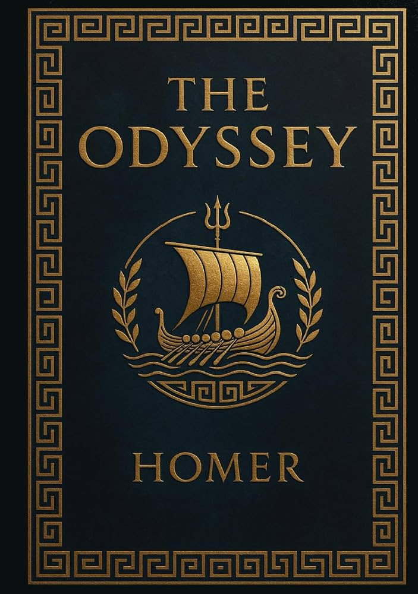
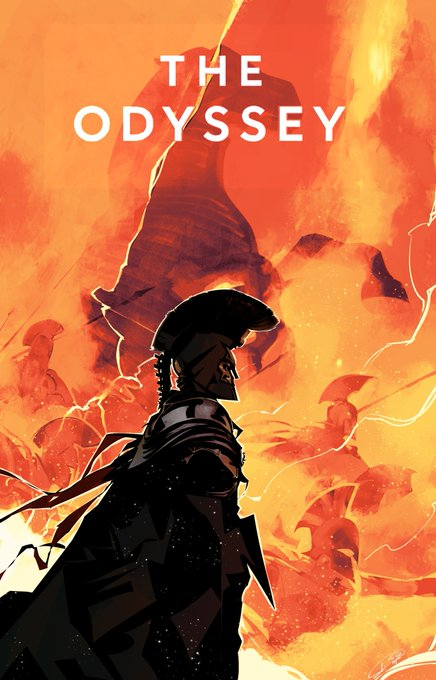
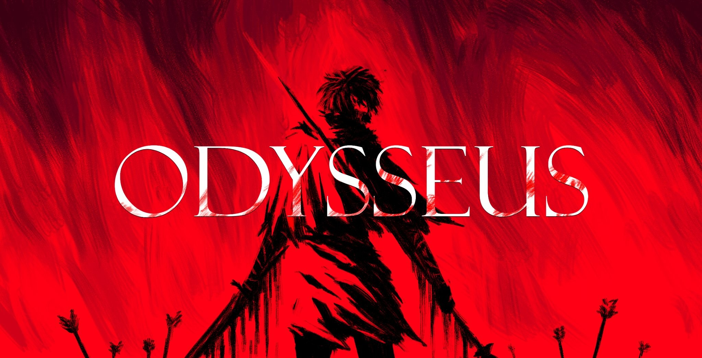

Homerova Odiseja je drevni starogrčki ep nastao pre više od dva milenijuma, koji se smatra jednim od najvažnijih temelja zapadne književnosti. Ova monumentalna poema kroz 24 pevanja detaljno opisuje mukotrpno, desetogodišnje lutanje kralja Odiseja koji nakon uništenja Troje pokušava da se vrati na svoju rodnu Itaku. Pored opasnih morskih nemani, gnevnih bogova i mitskih iskušenja, ep duboko istražuje univerzalne teme vernosti, porodice, identiteta, nostalgije i cene ljudskog ponosa.Homerova Odiseja je drevni starogrčki ep nastao pre više od dva milenijuma, koji se smatra jednim od najvažnijih temelja zapadne književnosti. Ova monumentalna poema kroz 24 pevanja detaljno opisuje mukotrpno, desetogodišnje lutanje kralja Odiseja koji nakon uništenja Troje pokušava da se vrati na svoju rodnu Itaku. Pored opasnih morskih nemani, gnevnih bogova i mitskih iskušenja, ep duboko istražuje univerzalne teme vernosti, porodice, identiteta, nostalgije i cene ljudskog ponosa.

EPIC: The Musical predstavlja inovativnu i izuzetno dinamičnu modernu adaptaciju ovog antičkog mita, strukturiranu kao konceptualni album od 40 pesama. Horhe Rivera-Herans je stvorio jedinstven zvučni svet u kom je celokupna naracija prenesena isključivo kroz muziku, podeljen u devet uzbudljivih tematskih saga kroz dva čina. Svaki lik i božanstvo imaju specifične instrumentalne motive, što omogućava slušaocima da kroz savremene žanrove poput popa, elektronike i orkestarskog roka dožive Odisejevu transformaciju iz racionalnog vođe u nemilosrdnog ratnika.
Horhe Rivera-Herans (Jorge Rivera-Herrans) je talentovani portorikanski kompozitor, glumac i tekstopisac koji je u ovaj projekat uložio godine intenzivnog rada. Kao svestrani kreator, on potpisuje kompletnu muziku, aranžmane i tekstove, a ujedno i pozajmljuje glas samom glavnom junaku, Odiseju. Njegov vizionarski pristup i odluka da proces stvaranja od samog početka deli na društvenim mrežama, pretvorili su ovaj nezavisni projekat u globalni fenomen i lansirali ga među najtraženije mlade autore modernog muzičkog teatra.

Pored muzičke verzije, isti ep je ekranizovao i Kristofer Nolan u svom blokbasteru The Odyssey (2026). Sniman u potpunosti IMAX 70mm kamerama, film donosi prizemljeniji i mračniji ton grčkim mitovima sa Metom Dejmonom u glavnoj ulozi. Ovaj trosatni vizuelni spektakl ostvario je istorijski komercijalni uspeh na blagajnama, zaradivši preko 1,7 milijardi dolara širom sveta i postavši pravi kulturni fenomen.